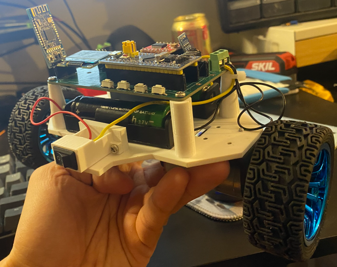
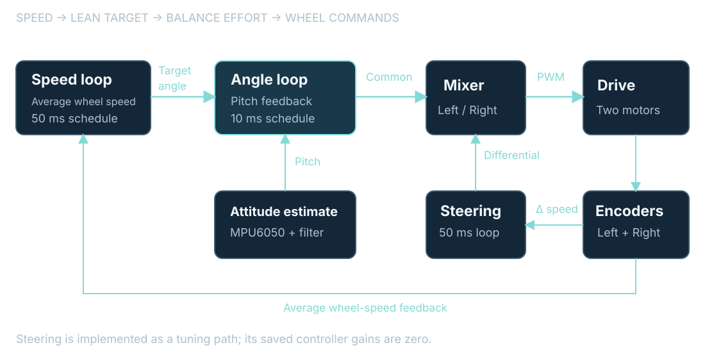

Battery and motor mount
The project includes a dedicated battery-and-motor mounting model with STEP and 3MF exports, connecting the CAD design to the physical printed parts.
Mechanical integration · Feedback control · Embedded C
A self-balancing car project that connects a physical chassis with real-time attitude estimation, wheel-speed feedback, and motor control.
Starting from a reference electronics and learning platform, I worked on the mechanical packaging, assembled the hardware, and developed firmware experiments for balance, speed, and steering control.
Explore the control system
The project
A two-wheel balancing platform needs to estimate its tilt and move the wheels to correct it. Adding a desired travel speed and a steering command introduces more feedback paths and tuning decisions.
This project is a practical way to work through that interaction: how the battery and motors fit into the chassis, how sensor readings become a useful angle estimate, and how control outputs become left- and right-wheel commands.
The hardware is assembled and the project includes attitude-estimation, motor-drive, and feedback-control firmware. The photograph documents assembly. Sustained upright balancing, disturbance recovery, and tracking performance still need recorded test results.
Mechanical development
The mechanical work focuses on fitting and retaining the battery, motors, control electronics, and power switch in a compact, accessible assembly.
The project includes a dedicated battery-and-motor mounting model with STEP and 3MF exports, connecting the CAD design to the physical printed parts.
Separate 18650-holder parts and a battery assembly model address how the battery is retained and integrated below the electronics.
A separate switch-holder model places the power switch at the front of the chassis, visible in the prototype photograph.
The electronics platform uses reference hardware and modular components. My project work centers on packaging, integration, and control-software development.
Control architecture
The balance loop commands common wheel effort. An outer speed loop sets a lean-angle target, while a differential path provides a place to develop steering feedback.

Attitude estimate
The accelerometer supplies a gravity-based angle. Gyroscope integration supplies the short-term angular change. A complementary filter blends them after applying the adjustable angle and gyro offsets.
θ = 0.01 θacc + 0.99 θgyroBalance and speed
The inner controller compares estimated pitch with a target angle. The outer controller uses average wheel speed to adjust that angle target.
The feedback version uses proportional and derivative action for angle, and proportional and integral action for speed in its saved gains.
Steering development
The left/right wheel-speed difference is the steering feedback signal. A separate controller supplies differential effort to the output mixer.
The steering loop is present in the code, but its saved P/I/D gains are all zero. That control path still needs tuning and verification.
| Task | Nominal interval |
|---|---|
| Base timer interrupt / key tick | 1 ms |
| IMU read, fusion, angle loop, motor update | 10 ms · 100 Hz |
| Wheel-speed, speed-loop, steering-loop update | 50 ms · 20 Hz |
These intervals follow the timer dividers in the firmware. They are configured scheduling targets, not measured execution-time results.
Common effort moves both wheels together; differential effort changes their relative commands. Each output is clamped before reaching the motor driver.
left = common + differential / 2
right = common − differential / 2The firmware limits each signed motor command to −100…+100. When the run flag is cleared, both motor commands are set to zero.
Embedded integration
Control experiments
The firmware variants make it possible to compare controller behavior without treating one gain set as a universal solution.
Development process
The project folders contain separate motor/encoder tests and several controller experiments, alongside the mechanical CAD and assembly files.
Separate projects isolate motor commands and encoder counts so the actuation and feedback paths can be checked before tuning the balance controller.
IMU fusion, angle regulation, average wheel-speed feedback, and common/differential motor mixing bring the subsystems into a single control architecture.
Firmware variants explore measurement-based derivative action, direct gyro-rate damping, output offsets, Bluetooth gain adjustment, and a steering feedback path.
What this project demonstrates
The work connects mechanical packaging, sensor interpretation, motor feedback, control timing, and practical tuning in one physical system.